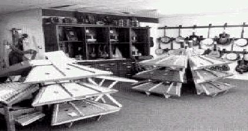
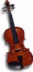
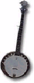
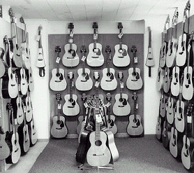

Article # 86
What is folk music and how did it originate? How did it become incorporated into the culture of Arkansas?


By: Floyd Gray, Lina Brown, and Rebecca Cherry
Atlas Project 2
B9: The Geography of Music
Geography 1305, Section 2721
Arkansas Folk Music

Research Question: What is folk music and how did it originate? How did it become incorporated into the culture of Arkansas?
Definition of Folk Music
The term "folk music" was invented by nineteenth-century scholars to describe the music of peasantry, age-old and anonymous (9). Folk music has been around for a long time. However, it was not until the early 1900s that scholars began to consider folk music as a legitimate part of a culture. The definition of folk music has been argued about for many years. A general definition of folk music is that it is music of the "folk", meaning the uneducated people. These are usually the rural or peasant people of a country, but sometimes are considered to be of a particular ethnic group or nationality (7). Some people believe that it exists in all classes of society, however (8). A folk culture is a culture that preserves traditions, and are held together by a certain language, religion, or background. They are usually not prone to change and are relatively isolated. These communities work together to preserve their traditional cultural values. Diffusion from one culture to another is sometimes difficult because of the geographic barriers. Some of these barriers can include mountains, large bodies of water, and climate. Mountains are probably one of the main barriers, because it can be very hard to get in touch with the outsider world if you are trapped in a small town high in the mountains. It could take days of horseback riding through dangerous areas to reach another town. It can be very hard to get any kind of signal for a phone or television in some places. Even satellites are almost impossible to use. This is a major barrier to acculturation. Acculturation is when one cultural group adopts many of the characteristics of another more dominant culture. Some climates, such as deserts or rain forests, can also be very hard to navigate through and find anyone else. There are also many cultural barriers to diffusion. These include religion, ethnicity, and social classes. Religion is probably the most prominent of these. Some religions don’t take well to the beliefs of others. For example, the slaves preserved their own folk music by singing in the fields and passing it down to each generation, and their white owners did not associate with this.
One important part of the definition of folk music is that it includes the oral transmission, that is the handing down of songs and thoughts by word of mouth to each generation. The International Folk Music Council adopted this definition at its Annual Conference in London in 1952. Folk music is "music that has been submitted to the process of oral transmission. It is the product of oral transmission. It is the product of evolution and is dependent on the circumstances of continuity, variation and selection." Folk music may change and evolve as it passes from person to person, but the music must be very old, and be a particular style of music, and that the author is usually not known.
Folk music also has a simple melody. Brand (2) described the American folk song as "distinguishable by a special sound, a kind of 'simple' noise" (p. 10). Bohlman (1) talked about folk music's ability to "express the most profound of human values" (p. xii). Historically, both folk and popular music are learned through hearing and performing, but that performers of "serious" music have formal training in music theory, composition, and more (4). There are two kinds of popular music, the folk and mass forms. The folk form is performed live, and the mass form is recorded (Cutler, 1985).
Forcucci's eight generalizations
Forcucci is the author of a schoolbook on the history of folk music in America. Because the oral transmission definition of folk music is obsolete and much of the music is transmitted by the mass media today, Forcucci put folk music into two basic categories: traditional folk songs and modern urban folk songs. He gave eight generalizations by which one may define folk music. The generalizations are as follows:
1. Folk songs represent the musical expressions of the common people.
2. These songs are not composed in that they are not the works of skilled, tutored musicians. It is more accurate to say that they have been created rather than composed.
3. These songs are ordinarily the product of an unknown person or group of persons. The credits often read: Anonymous; American Folk Song; Traditional; or Southern Mountain Song.
4. The words or lyrics of folk songs are usually informal in nature to reflect the speech patterns and expressions of a particular people or region.
5. These songs are highly singable, primarily because they were first presented with the singing voice rather than have been written down in musical notation beforehand.
6. Folk songs are simply structured, both musically and verbally. It is their innocence that gives them their charm.
7. These songs can be effectively performed without instrumental accompaniment. When they are accompanied, a less formal instrument (such as a guitar, banjo, accordion or dulcimer) is considered appropriate.
8. Folk songs are indigenous to a particular region or people because they reflect the musical/verbal preferences of that people or region in their materials. (3)
Roots of Folk Music and its relation to other cultures
There are many different roots of folk music. For example, the first English settlers in the early 1600s that came to America brought with them hymns, fiddles, and ancient ballads from the English and Irish traditions. The old ballads from Britain and Ireland later evolved into gospel songs, work songs and Negro spirituals that flourished on the plantations of the American South. Black folk music originated on the West Coast of Africa when the slave trade began. African-based music included work songs sung in a call and response pattern common to African chants. When the black slaves came to the New World, they proceeded to convert to Christianity and began to sing the protestant hymns of the colonies. (10)
Though the African American culture by some was thought to be the first culture to create folk music, this thought is not actually true. The African American culture instead served as an important foundation for it. The period of slavery was a time when the African-American race was suffering and enduring great oppression. The outlet from suffering, created by the tormented people, was one that led to spiritual dances, ballads and songs. Some say that the Negro path to freedom was one driven by relentless hope, originated in the forceful verses sung by the distraught people. Although there was no slavery in the heart of the Ozark Mountains, some of the powerful folk writings written by the African American culture were created in the heart of these mountains. (10)
Folk music is actually an amalgamation of many different cultures. This means that it is kind of a melting pot of many cultures. The cultures don’t really lose their identity, but instead all come together in one place from many different places.
Instruments Used in Folk Music
The instruments used are one of the most important parts of a music. Folk music is very different from any other kind. The human voice is the most important instrument used in folk music, if it can really be considered an instrument. This is how the music was passed down to generations and one of the only ways that the songs have survived until today. The fiddle is the next most important instrument. It is sometimes known as a violin, but musicians know that there are distinct differences between the two. The fiddle has a lower bridge so that a number of strings can be played at the same time. Fiddlers use a different kind of string than violinists do also. One reason why folk musicians favor the fiddle over the violin is because of its small size, which makes it easy to transport around the country (McNeil 103). The guitar is another important instrument. Most folk bands consist of the lead singer, one or more fiddlers, and a guitar and banjo. The mountain dulcimer is an instrument sometimes used in folk music, but not nearly as much.
Jimmy Driftwood

Jimmy Driftwood is one of the most influential people in the history of folk music. He was born in Timbo, Arkansas, a town about 12 miles from Mountain View. He was the founder of the Rackensack Folklore Society, located in Mountain View. Along with his friends, he built the Jimmy Driftwood Barn and Folklore Hall of Fame, which is also in Mountain View. Jimmy was a high school teacher and wrote songs to help his class learn. The song “The Battle of New Orleans” was written in order to help Jimmy explain to his class that the Battle of New Orleans was fought during the War of 1812, and not the Revolutionary War as they had thought. He composed over 6,000 songs, including “The Tennessee Stud”, “Down in the Arkansas”, and “He had a Long Chain On.” He won two Grammy Awards for his music and was awarded an Honorary Doctorate Degree in Folklore from Peabody University in Nashville, Tennessee. He was known as the “Bard of the Ozarks” to the thousands of fans that followed him. He wanted to create a festival that everyone would enjoy, so he started the Arkansas Folk Festival. It is one of the most important folk festivals in the United States today. Jimmy Driftwood is probably the most important figure in the history of folk music.
As you have seen, folk music means different things to different cultures. It can all be traced back to the same common roots however. Folk music was assimilated into the culture of Arkansas through many different ways, and will probably even change in the generations to come. There have been many barriers to the diffusion of folk music, but a love for folk music has overcome many of these, though it has taken a long time. Even though folk music is ever changing, it has been and will always be an important part of Arkansas's past. (Note: Inorder to listen to some samples of different forms of Folk music, see the music websites page.)
Works Cited
1. Bohlman, P. V. The Study of Folk Music in the Modern World. Bloomington, IN: Indiana University Press. 1988.
2. Brand, O. The Ballad Mongers. New York: Funk & Wagnalls. 1962.
3. Definition of Folk Music. 4 April 2001. <http://www.coe.ufl.edu/courses/EdTech/Vault/Folk/Definition.htm>
4. Denski, S. W. Music, Musicians, and Communication. J. Lull (Ed.), Popular music and communication (2nd ed., pp. 33-48). Newbury Park, CA: Sage. 1992.
5. Forcucci, S. L. A Folk Song History of America. Englewood Cliffs, NJ: Prentice-Hall. 1984.
6. Karpeles, M. “Definition of Folk Music“. Journal of International Folk Music Council (8) 6-7. 1955.
7. Nettl, B. and Myers, H. Folk Music in the United States: An Introduction (3rd ed.). Detroit, MI: Wayne State University Press. 1976.
8. Rhodes, W. Folk Music, Old and New. B. Jackson (Ed.) Folklore & Society, 11-19. Hatboro, PA: Folklore Assoc. 1966.
9. Seeger, P. The Incomplete Folksinger. New York: Simon and Schuster: 1972.
10. The Friends of Music Society: American Folk Music. 3 April 2001. <http://www.mmb.org.gr/otebook/acq/details/en/acq48.htm>
Folk music Websites
1. www.music.com/music/genres/folk
2. www.contemplator.com/america/arkansas.html
3. www.sonicnet.com/artists/
4. www.ozarkfolkcenter.com/